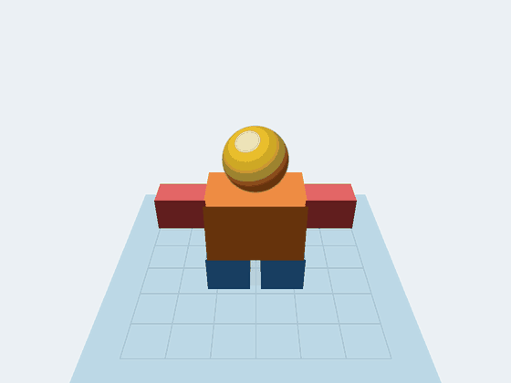
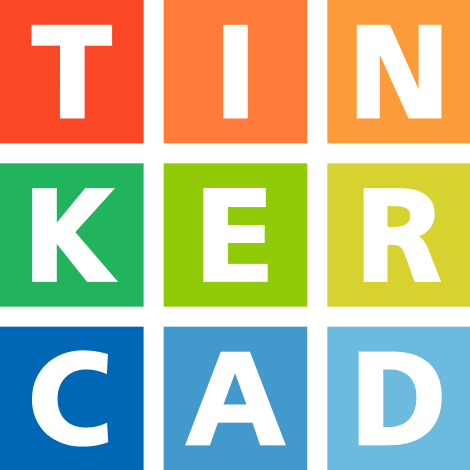
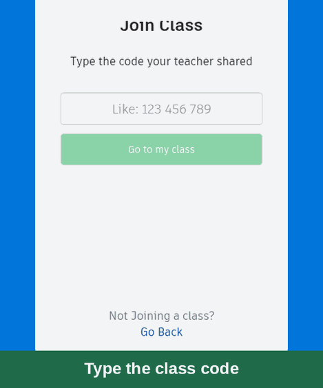
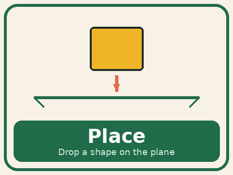
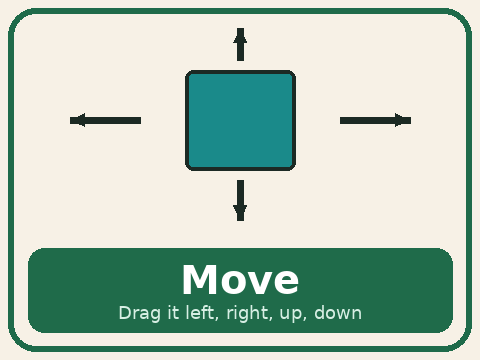
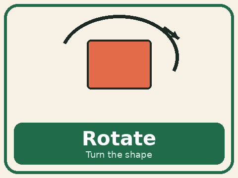
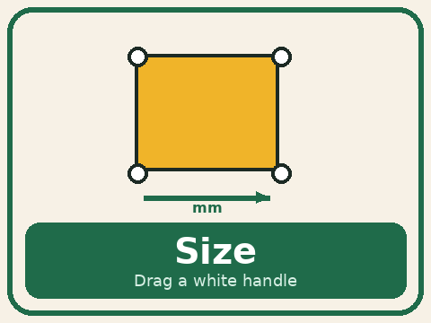
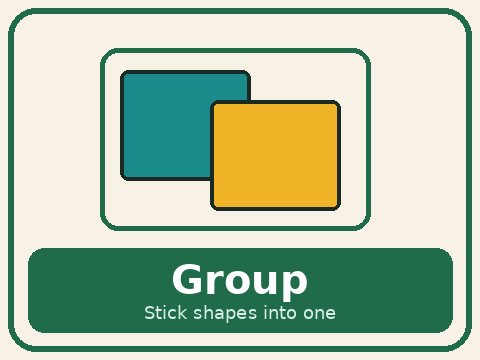
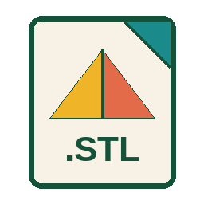

Students design an original character from simple 3D shapes in Tinkercad, a free design tool that runs in the browser. They export an STL file, and staff print it on our Bambu Lab printers. Every student takes a figure home.

Design in Tinkercad

Students drag boxes, cylinders, and spheres onto a workplane and group them into one solid character. A box can be a body, a sphere a head, and a cylinder a limb. Teachers choose the class theme. Animals, heroes, and cultural figures are favorites.
Join the Class

Students open Tinkercad on a laptop or Chromebook and join with a class code. Nothing to install. A short warm-up practices the tools they will use all day.
Build the Figure
Five tools are the whole design lesson: place a shape, move it, turn it, resize it, and group the parts into one solid piece the printer can print.






Export an STLStudents export an STL file, the file a 3D printer reads. The printer builds the figure in thin layers from the bottom up. Staff run the Bambu Lab printers, and every student takes a finished figure home.
AZ 6th Grade Standards
Students design an original 3D figure in Tinkercad, check that it will print, and export an STL file. The visit connects to Arizona middle-school engineering design (MS-ETS1), 6th grade geometry and measurement, and educational technology standards for design and creating digital work.
Field Trip Preparation
Curious before the visit? Tinkercad's free Learn center covers placing, moving, sizing, and grouping shapes.
Full lesson plans, worksheets, and media are also available in the Steamspace Moodle course.